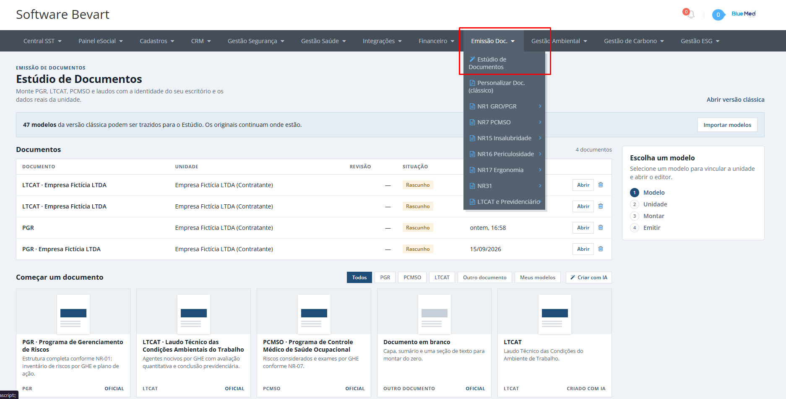
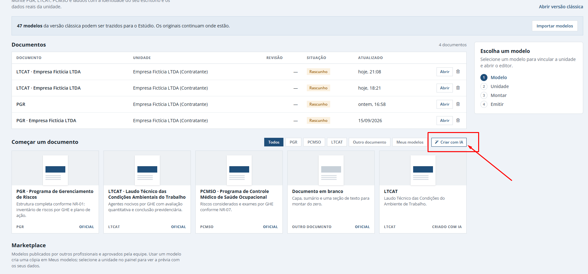
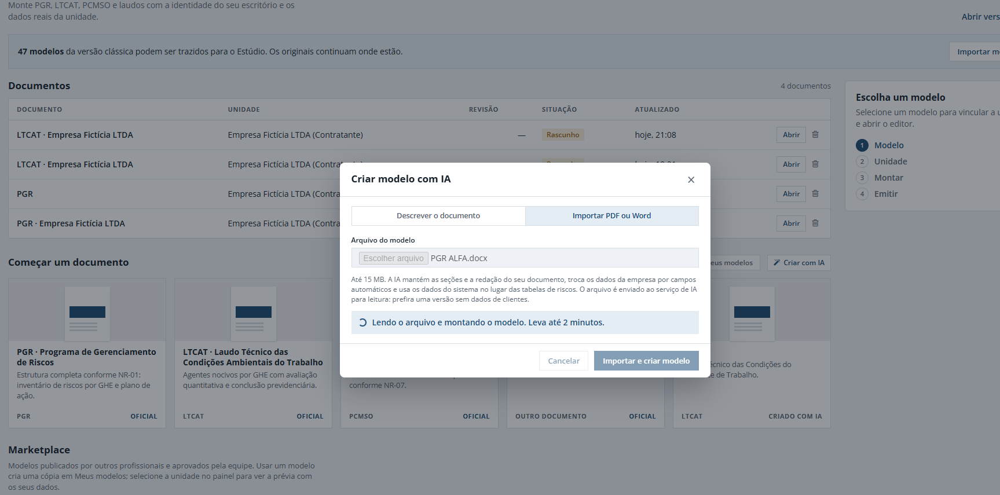
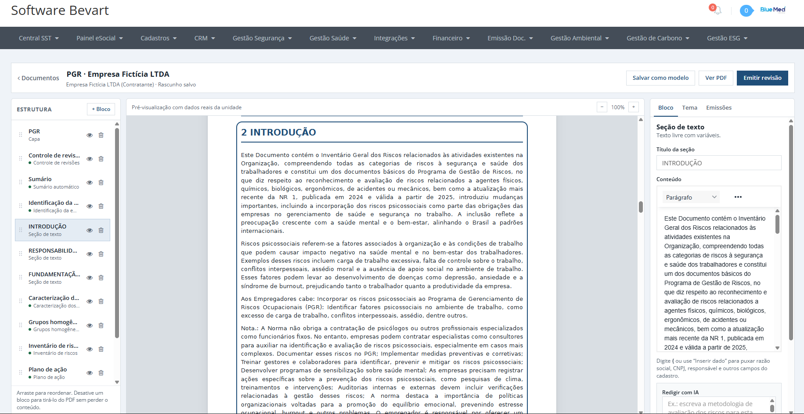
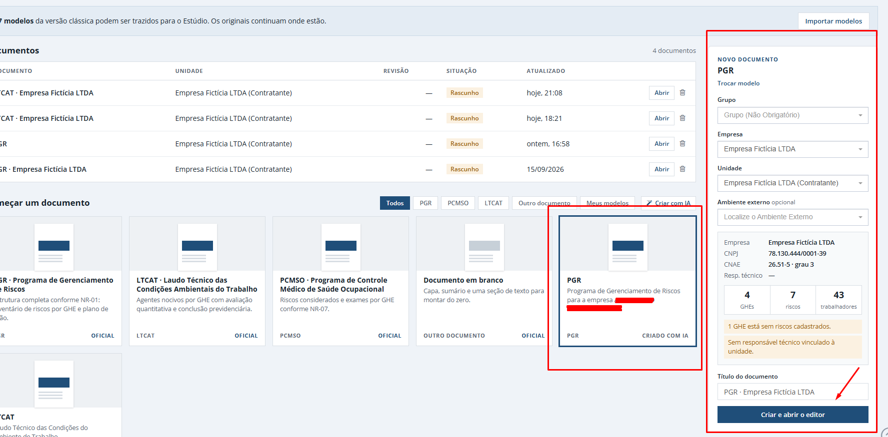

Modelo de documento SST com IA: importe o PDF que você já emite
Trocar de sistema não precisa mudar o seu documento. No Estúdio de Documentos do Bevart, a IA lê o PGR, LTCAT ou PCMSO que o seu escritório já usa e monta o modelo dentro do sistema, ligado aos dados de cada unidade.

O essencial em 30 segundos
- Em Emissão de Documentos, Estúdio de Documentos, o botão Criar com IA aceita o PDF ou Word (.docx) que o escritório já emite, até 15 MB.
- A IA mantém seções e redação, troca os dados da empresa por campos automáticos e usa as tabelas de risco do sistema no lugar das tabelas fixas.
- O modelo vira blocos editáveis e serve para toda a carteira: escolhe a unidade, gera e emite com revisão e assinatura digital.
A objeção que mais aparece em demonstração não é preço nem função. É o PDF. O escritório passou anos ajustando capa, ordem das seções, redação e o jeito de apresentar o inventário, e não quer receber de volta um documento genérico com a cara de outro software.
No Bevart isso se resolve em dois passos: abrir o Estúdio de Documentos e importar o arquivo que você já usa. A IA monta o modelo com a sua estrutura e o seu texto, e o conteúdo técnico passa a vir do cadastro da unidade.
Por que o modelo de documento trava a troca de sistema
Migrar cadastro é a parte fácil. Empresa, unidade, funcionários e até o inventário de riscos saem de uma planilha e entram no sistema novo. O que trava a decisão é refazer os modelos de PGR, LTCAT e PCMSO no padrão do sistema novo.
E faz sentido travar. O documento é a assinatura do escritório: é o que o cliente lê, o que o auditor pega na mão e o que diferencia o seu trabalho do concorrente. Trocar isso por um layout padrão significa explicar para cada cliente por que o laudo mudou de cara.
Fica a sua estrutura: capa, ordem das seções, textos introdutórios, metodologia, redação. Muda a origem dos dados: identificação da empresa, CNAE, grau de risco, inventário e plano de ação deixam de ser texto colado e passam a ser lidos do sistema a cada emissão.
Passo 1: abrir o Estúdio de Documentos e clicar em Criar com IA
No menu Emissão Doc., entre em Estúdio de Documentos. É ali que ficam os modelos do escritório e os documentos já montados por unidade.

Na seção Começar um documento, ao lado dos filtros de modelos, está o botão Criar com IA.

Passo 2: importar o PDF ou Word que você já usa
A janela Criar modelo com IA tem duas abas. Descrever o documento serve para quem quer partir do zero. Para trazer o seu padrão, use Importar PDF ou Word, escolha o arquivo (PDF ou .docx, até 15 MB) e clique em Importar e criar modelo.

Na leitura, a IA faz três coisas:
- Mantém seções e redação. A ordem dos capítulos e o texto do seu documento continuam os mesmos.
- Troca os dados da empresa por campos automáticos. Razão social, CNPJ, endereço e afins passam a ser preenchidos pela unidade escolhida na hora de gerar.
- Usa as tabelas do sistema. Onde o seu arquivo tinha uma tabela de riscos fixa, o modelo passa a usar os dados do sistema, como o inventário e o plano de ação.
O arquivo é enviado ao serviço de IA para leitura. Use uma versão do documento sem dados de clientes: um modelo em branco, ou um documento com nome, CNPJ e endereço trocados por dados fictícios.
Traga o seu PGR e veja ele virar modelo
Importe o PDF ou Word que o escritório já emite e gere o mesmo documento, com a sua cara, para qualquer unidade da carteira.
Criar conta grátisO modelo abre em blocos, prontos para ajustar
Depois da importação, o modelo abre no editor web do Estúdio, dividido em blocos: capa, controle de revisões, sumário, identificação da empresa, seções de texto, caracterização dos ambientes, grupos homogêneos e assim por diante.

Dá para arrastar um bloco para outra posição, renomear ou desativar sem perder o conteúdo. A pré-visualização já roda com os dados reais da unidade, então você confere o resultado antes de emitir, não depois.
Revise primeiro os blocos de dados (identificação, inventário, plano de ação). São eles que mudam de uma unidade para outra. Os blocos de texto costumam sair como estavam no seu arquivo.
Um modelo para todas as empresas da carteira
Com o modelo salvo, gerar o documento de outra empresa é escolher a unidade e abrir o editor. O PDF sai com:
- identificação da empresa, CNAE e grau de risco preenchidos;
- inventário de riscos e plano de ação daquela unidade;
- controle de revisão e de vencimento;
- assinatura digital no documento emitido.

O que sustenta a qualidade desse PDF é o cadastro. Se o inventário estiver bem montado, o documento sai certo em todas as unidades; veja como montar o inventário de riscos e o plano de ação do PGR e o caminho do cadastro ao LTCAT. Para a etapa final, há um guia sobre assinar o documento em PDF e validar a assinatura.
Se preferir partir de um modelo pronto em vez do seu arquivo, veja os modelos de documentos SST em PDF do Bevart.
Qual documento importar primeiro
Comece pelo documento que você mais emite. Para a maioria das consultorias é o PGR, porque é o que mais se repete na carteira e o que mais depende do inventário. Validado o primeiro modelo, os outros (LTCAT, PCMSO, laudos de insalubridade e periculosidade) seguem o mesmo caminho.
Perguntas frequentes
Posso importar meu modelo de PGR em Word para outro sistema de SST?
No Bevart, sim. No Estúdio de Documentos, o botão Criar com IA aceita arquivos PDF ou Word (.docx) de até 15 MB. A IA mantém as seções e a redação e liga os dados da empresa e as tabelas de risco ao cadastro do sistema.
A IA muda o texto do meu documento?
Não é essa a proposta. A importação mantém as seções e a redação do seu documento e troca apenas os dados da empresa por campos automáticos e as tabelas fixas de risco pelos dados do sistema. Depois, você revisa bloco a bloco no editor.
É seguro enviar o PDF de um cliente para a IA?
O arquivo é enviado ao serviço de IA para leitura. Por isso a recomendação é importar uma versão sem dados de clientes, como um modelo em branco ou um documento com dados fictícios. Os dados reais entram depois, pelo cadastro da unidade.
Funciona para LTCAT, PCMSO e outros documentos?
Sim. A importação vale para PGR, LTCAT, PCMSO ou qualquer outro documento do escritório. O modelo criado pode ser usado para gerar o documento de qualquer unidade cadastrada.